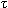
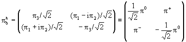

Рассмотрим теперь одно из важных применений теории групп и их представлений в физике элементарных частиц. Речь пойдет о классификации элементарных частиц с помощью теории групп. В качестве простого примера рассмотрим протон и нейтрон. Давно известно, что протон и нейтрон обладают близкими массами и близкими свойствами относительно сильных взаимодействий. Именно поэтому в сильных взаимодействиях Гейзенберг предложил рассматривать их как одно состояние. Но для этого надо найти группу, в которой наинизшее нетривиальное представление имеет размерность 2. Попробуем здесь применить формализм группы SU(2), имеющей 2-мерный спинор в качестве базиса представления. Введем группу изотопических преобразований SU(2)I. Определим нуклон как состояние c изотопическим спином I = 1/2 с двумя проекциями ( протоном c I3 = 1/2 и нейтроном I3 = -1/2) в этом придуманном изотопическом пространстве, проводя практически полную аналогию с введением спина 1/2 в обычном пространстве. Обычно базис двумерного представления группы SU(2)I записывается как изотопический спинор
, |
(1.45) |
что означает, что протон и нейтрон определены как
|
(1.46) |
Представление размерности 2 реализуется матрицами Паули 2×2
τk , k = 1, 2, 3 ( вместо
σi , i = 1, 2, 3, которые мы оставляем для описания спина 1/2
в обычном пространстве), при этом изотопический оператор
τ+ = 1/2(1 + i2)
переводит нейтрон в протон, а τ-
= 1/2(τ1 - iτ2),
соответственно, переводит протон в нейтрон. Известен также изодублет каскадных
гиперонов спина 1/2 Ξ0,-
c массами ~ 1320 МэВ. Давно известны дублет странных мезонов спина 0 K+,0
с массами ~ 490 МэВ и антидублет их античастиц
K0,-.
А как описать частицы с I = 1? Скажем, триплет
π-мезонов
π+,
π-,
π0 спина ноль отрицательной
четности с массами m(π±)
= 139.5675 + 0.0004 МэВ, m(π0)
= 134,9739 + 0,0006 МэВ и практически одинаковыми свойствами по
сильным взаимодействиям? В группе (изотопических) вращений мы бы задали
изотопический вектор
в качестве базиса (где действительные псевдоскалярные поля
π1,2
связаны с заряженными пионами
π±
формулами
π± =
π1 + iπ2,
а
π0
=
π3), генераторы Ak,
k = 1, 2, 3, в качестве представления алгебры и матрицы Rk, k =
1, 2, 3 в качестве представления группы, где углы  k определены в
изотопическом пространстве.
k определены в
изотопическом пространстве.
Используя результаты предыдущего параграфа, изотопическому
триплету
вещественных полей в
SU(2)I сопоставляется базис вида
, |
(1.47) |
где заряженные пионы описываются комплексными полями . Итак, пионы могут быть заданы в изотопическом формализме в виде двумерных матриц:
, , , |
(1.48) |
которые образуют базис представления размерности 3, а само представление задается, как уже говорилось, унитарными унимодулярными матрицами 2×2 U. Подобным образом описываются частицы произвольного спина с изоспином I = 1. Из мезонов следует помнить изотриплет векторых мезонов ρ±,0 c массой ~ 760 МэВ.
(1.49) |
Среди частиц с полуцелым спином укажем, например, изотриплет открытых к началу 60-х годов странных гиперонов спина 1/2 с массами ~1192 МэВ Σ±,Σ0 который запишется в базисе SU(2) как
. |
(1.50) |
Представление размерности 3 задается теми же матрицами U.
Напомним еще раз, что экспериментально изотопический спин
определяется по числу частиц N = (2I + 1), близких по своим свойствам, т.е.,
имеющим одинаковый спин, близкие (на уровне процента) массы и практически
одинаковые свойства по сильному взаимодействию. К примеру, при массе, близкой к
1115 МэВ была обнаружена только одна частица спина 1/2 со странностью S = -1 -
это гиперон Λ c нулевым электрическим
зарядом и массой 1115,63 + 0,05 МэВ. Естественно, что этой частице был
приписан изотопический спин ноль. Таким же образом был определен изоспин I = 0
псевдоскалярного мезона η(548).
Известен также триплет барионных резонансов со спином 3/2,
странностью S = - 1 и массами
M(Σ*+(1385)) =1382,8 + 0,4
МэВ, M(Σ*0(1385)) =1383,7 + 1,0
МэВ, M(Σ*-(1385)) =1387,2 + 0,5
МэВ, (резонансы - это частицы, распадающиеся по сильному взаимодействию и потому
обладающие очень коротким временем жизни; одно время активно обсуждался
вопрос, стоит ли их зачислять в "элементарные")
или (можно
еще встретить другое обозначение для этого резонанса - Y*1(1385)).
Известно только одно состояние с изотопическим спином I = 3/2
(т.е., на эксперименте нашли 4 практически одинаковых состояния, отличающихся
только зарядом) - это четверка нуклонных резонансов со спином J = 3/2
Δ++(1232),
Δ+(1232),
Δ0(1232),
Δ-(1232), распадающаяся
на пион и нуклон (измеренная разность масс
= 2,7 + 0,3 МэВ). ( Используется и другое обозначение - N*(1232).)
В системе
было обнаружено только два резонанса со спином 3/2Ξ*0,-
с массами ~1520 МэВ, поэтому они помещены в изодублет с изоспином I = 1/2.
Использование формализма изотопического спина позволяет не
только экономно расклассифицировать множество сильновзаимодействующих частиц
(адронов) по изотопическим мультиплетам, но и связать между собой амплитуды
распадов, а также амплитуды рассеяния частиц, входящих в одни и те же
изотопические мультиплеты.
Подробнее мы не будем останавливаться на этих соотношениях,
поскольку они являются частью соотношений, возникающих в рамках более высоких
групп симметрии, к рассмотрению которых мы и переходим.
В конце этого раздела напомним еще вид соотношения
Гелл-Манна-Нишиджимы между зарядом Q, 3-ей компонентой изоспина I3 и
гиперзарядом Y = S + B, где S - странность, B - барионное число (+1 для
барионов, -1 для антибарионов, 0 для мезонов):
Q = I3 + Y/2. |
(1.51) |
Поскольку Q есть интеграл по гиперповерхности от 4-ой компоненты электромагнитного тока, это означает, что электромагнитный ток является суперпозицией 3-ей компоненты изовекторного тока и изоскалярного гиперзарядового тока.